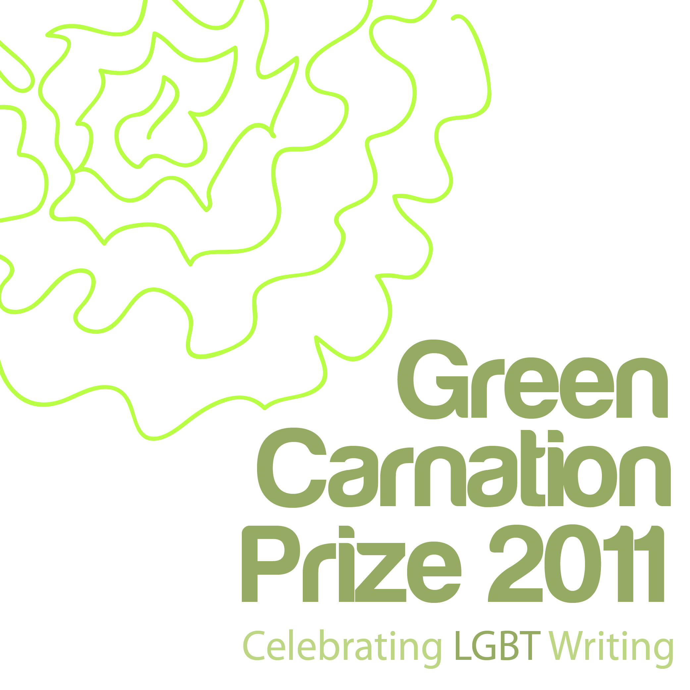

As the final few days before the Green Carnation Prize judges reveal their longlist for 2011, we thought it would be nice to get to know them a little better while we wait with baited breath for the announcement on September 28th. For the first in the series of interviews with the Green Carnation Prize 2011 judges, Gavin Pugh was sent off to catch up with author Paul Magrs, who co-founded and chaired the Green Carnation’s inaugural year last year and who signed up again this year for more fun and bookish frolics.


Gav: So July last year a new prize came into being, The Green Carnation, which was awarded to ‘Paperboy’ by Christopher Fowler in December. And now you’re doing all again. Wasn’t one year enough then?
Paul: Well, last year it was all so fast and exciting. It seemed like no time at all between the initial idea and then the longlist and the shortlist announcements, the reading and the deciding on a final winner. It was down to my wonderful fellow judges and their enthusiasm and commitment – and also these fantastic new tools for spreading the word, such as Twitter and blogging and Facebook. Before we all knew it, the prize was a real thing and people were talking about it. And then – after vast amounts of reading, discussion, planning – it was over!
I think we’d always planned for it to continue. The point in the first place was that there wasn’t another prize like ours. So it had to continue simply because of that – and to continue to bring to public attention all kinds of books of different forms and genres.
I’m proud to be involved again in 2011… though all the reading can be a bit daunting, especially when it starts arriving through the letter box all at once. Maybe next year I’ll get a break!
Gav: How did you find the reaction to the announcement of a prize for gay male writers?
Paul: I’d say it was welcomed pretty well across the board. People were very interested. We had loads of talks about it being men-only – amongst ourselves and with others outside. It seemed the right thing to do last year. I’m very interested in things like the Orange prize, and the way it always picks more interesting and varied and challenging books compared with some of the more staid literary prizes.
Having said that, I myself tend to prefer books by women and I always have. On the whole, women are braver at making the generic leaps and border crossings that I’m fondest of. I don’t know why that is – but I’m glad that we’ve broadened our genre remit. What I really want to read is a transsexual steampunk stream-of-consciousness murder mystery in verse.
When the submissions were from gay men only there was a lot of cock to take on board. Honestly, you kind of know it of course, but some of these books – from the classiest to the trashiest – they’re all mad keen and awash with spunk. Sometimes that’s great. But it can wear you out in the end and make you feel queasy.
Gav: For all that talk of cock and messiness you seemed to come up with a shortlist that didn’t tick the ‘stereotype’ box. Do you think you managed to show that: Writing by gay men can be funny, exciting, harrowing, uplifting and challenging – and it can range right across the genres. It can also be created by men from all classes and races.
We demonstrated that pretty well… As much as we could. We got a good range of stuff there in the longlist and the shortlist. The more obvious clichéd stuff never made it through!
I still wanted more genres. It was all pretty much ‘literary’ fiction in the end… I’d love more gay science fiction or cosy mystery or horror or epic fantasy in there…
Gav: Sticking with sex. Could gay male writers do more to show their diverse interests or does cock conquer all?
Paul: There has to be a certain amount of sexy stuff in there. For me, gay fiction still has its roots in underground fiction and slightly subversive stuff… in the kinds of books that you’d read under the covers or out of sight, maybe.
Gav: Are e-reading devices like the Kindle going to make that kind of reading easier? And give wider access to more daring books?
I really don’t know. I do know that the Kindle has altered my reading habits in all sorts of interesting ways. I like the idea that you can read lots of things at once, and that no one knows what you’re reading when you’re out and about with it. And then there’s the business of self-publishing, and I think that will change things. But whether it means more ‘daring’ books or more badly written books – I don’t know. Interesting, though, because the books published like that will be bypassing the usual gatekeepers of taste and quality. I wonder what that will bring. Mostly bad books, I think – but there will be amazing things produced, too.
Gav: Were you surprised by the amount of entries you had last year considering the spontaneity of its creation? And did their variety surprise you?
Paul: I was chuffed to bits about that. it was amazing hearing the enthusiasm from various publishers. Simon Savidge, who is chairing this year, was brilliant at enlisting support from all those people in publicity departments and liaising with them. When they saw that we were doing something real and serious and new, people got right behind us.
The variety was pretty good. I still want more, though. Too many were just plain old ‘literary fiction’… the kind of books that are static, a bit maudlin and all premise and no plot. I want more sf, crime, thrillers, historicals, etc. I was pleased to read people like Rupert Smith and Christopher Fowler who work in different genres and write different books simultaneously.
I’m just a cross-genre slut, I think. What’s great is that when gay people are taking on a genre – they’re bound to bend and transgress the rules. Nothing comes out straight!
Gav: I’m going to ask this years Chair more about the opening of doors to all LGBT (Lesbian, Gay, Bisexual and Transgender) writers but as this year is going draw on a wider range of writers than before how are you preparing for all the reading? Is there anything you are looking for in particular?
Paul: Personally, in this year’s novels, I’m looking for less morbid introspection and less dicking about in public toilets. I want that Steampunk thing of queer romance and high adventure among the stars. Do you think I’ll get it..?
Gav: We can only hope! Finally, what books could have won if this year’s format of the prize was around earlier?
Paul: Virginia Woolf’s ‘Orlando’; Christopher Isherwood’s ‘Goodbye to Berlin’; David Rees’ ‘In the Tent’; Ellen Galford’s ‘The Fires of Bride’; Maureen Duffy’s ‘The Microcosm’; Truman Capote’s ‘The Grass Harp’
Gavin Pugh blogs at Gav Reads, you can find more out about Paul on his blog here. Tomorrow we will be getting to know the lovely Stella Duffy that bit better.